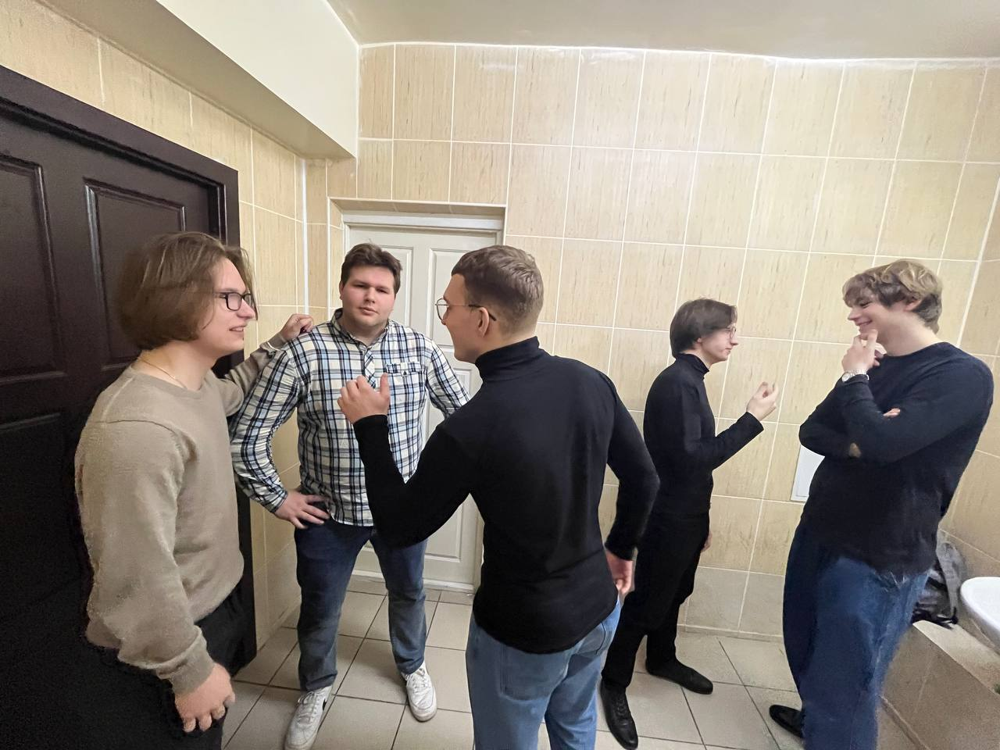
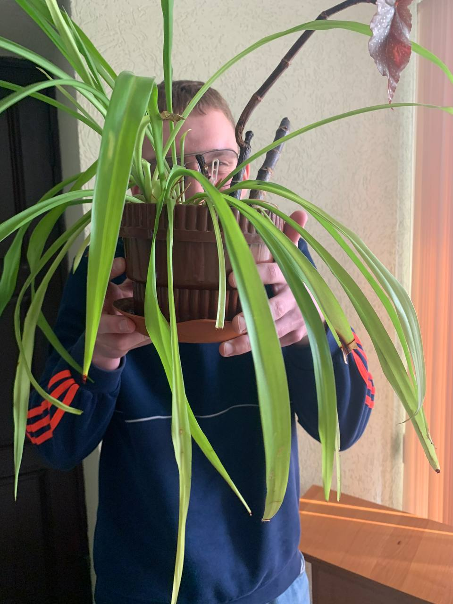
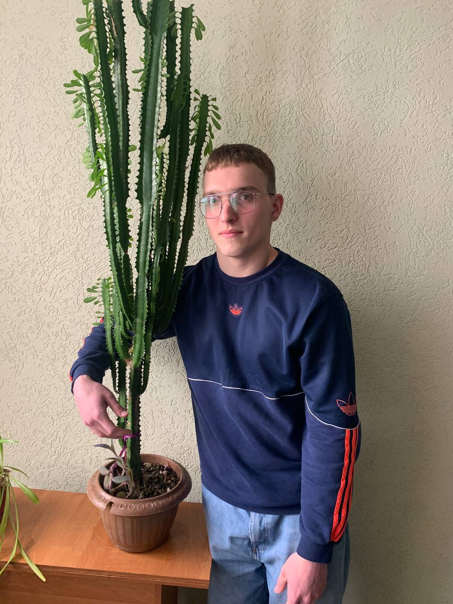
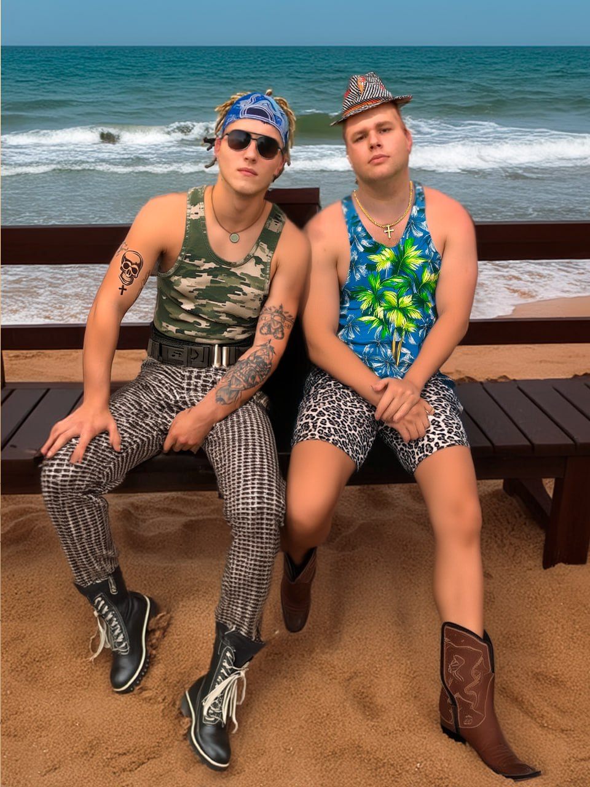
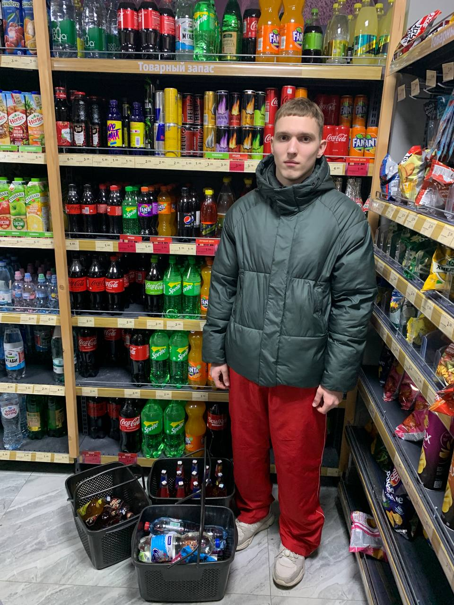
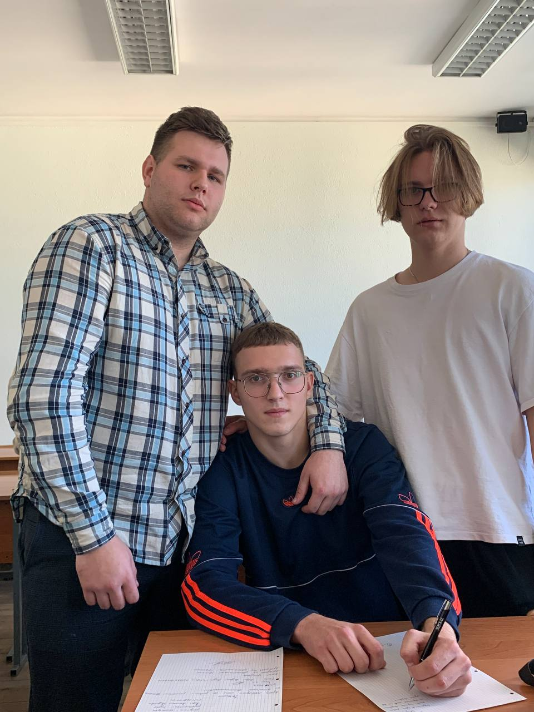
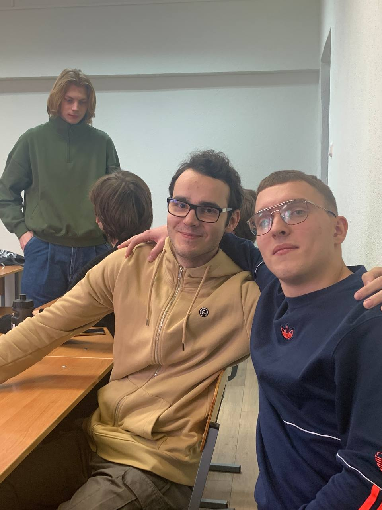
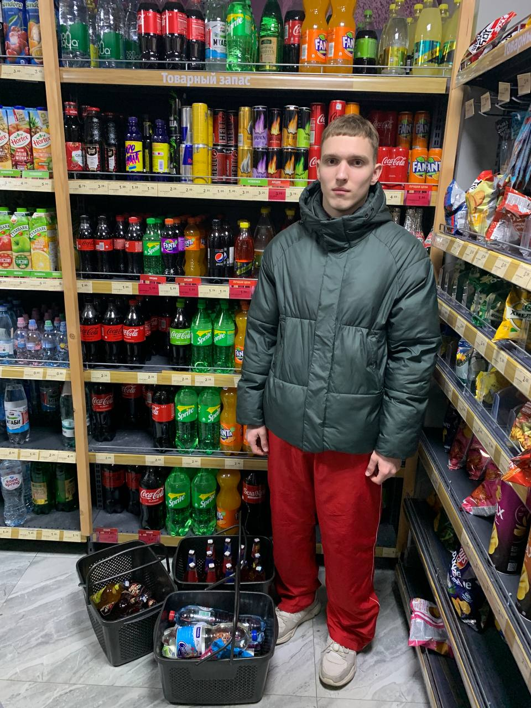
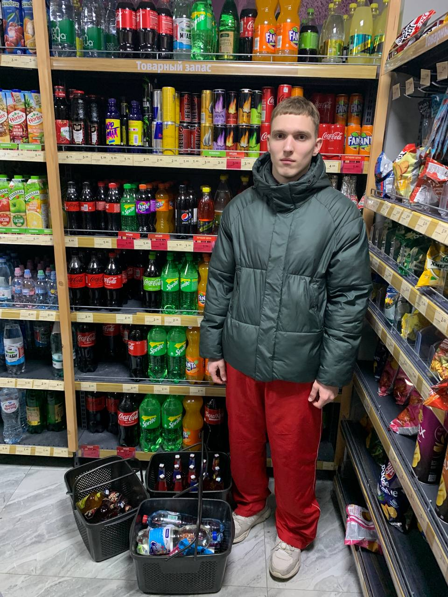

Бугор, он же главный на районе, живёт по своим правилам.
В здравый университет ходит, чтобы мозги прокачать, но душа его всегда на районе с братками.
Шнапс, Шпиль, Кастет и Библиотекарь — это его команда, с которой он проводит лучшие вечера.
Вечерами стая собирается, обсуждает дела, делится взорванными историями и просто кайфуют от жизни.
Бугор знает, что настоящая сила — это не только в кулаках, но и в уме.
Вот так и живём, балансируя между учёбой и уличной жизнью, всегда на стиле и в движении.

1. Релаксировать на природе
Бугор, он же главный на районе, когда не занят делами с братками, обожает релаксировать на природе.
Снимает стресс после насыщенных вечеров со Шнапсом, Шпилём, Кастетом и Библиотекарем.
Прогулки по лесу, рыбалка под шнапс или просто отдых на свежем воздухе — всё это помогает ему восстановить силы и поймать дзен.
Природа для него — это способ сбежать от городской суеты и перезагрузить мозги.
Всегда на стиле, он умеет найти баланс между динамичной жизнью на районе и спокойствием на природе.
  
2. Наводить суету
Бугор — истинный мастер наведения суеты на районе.
Он всегда знает, как задать жару и поднять шум, чтобы о нем говорили.
Со Шнапсом, Шпилём, Кастетом и Библиотекарем он находит приключения на каждом углу.
От рейдов по ночным клубам до ярких уличных тусовок — Бугор живет, чтобы суета кипела.

3. Спрашивать за шмот
Бугор всегда знает, как спросить за шмот на районе.
Он в курсе последних трендов и следит за тем, чтобы все вокруг были в теме.
Шнапс, Шпиль, Кастет и Библиотекарь подтверждают: если нужен совет по стилю или критика по аутфиту — это к Бугру.
Вечерами, собираясь на районе, он легко может определить, кто где прикупил тряпки.
Умеет почмырить за паль, задавая тон всей братве.
4. Тусоваться с братвой
Бугор знает, что жизнь без братвы—это не жизнь.
Он обожает тусоваться со Шнапсом, Шпилём, Кастетом и Библиотекарем, устраивая незабываемые вечера на районе.
День без посещения главного места - базы - день прожит зря.
Основной интерактив для братвы - цыганка, где легко определить у кого слабая дыхалка.
Эти моменты — это истинное братство, где каждый вносит свой вклад в атмосферу.
Бугор уверен, что настоящая сила — в единстве и поддержке друг друга.
Тусить с братвой—это не просто хобби, это образ жизни для Бугра.
 
5. Кушать по-царски
Бугор—настоящий гурман на районе.
Он знает толк в том, как кушать по-царски.
Вечерами после дел с Шнапсом, Шпилём, Кастетом и Библиотекарем, он любит устроить пир на весь мир.
Заказывая самые изысканные блюда или собираясь на совместные застолья, Бугор всегда знает, чем угостить братву, чтобы они запомнили этот вечер надолго.
Не стоит забывать и про тот факт, если не дать фазу после еду - она плохо усвоиться, поэтому этим пренебрегать нельзя.

 
